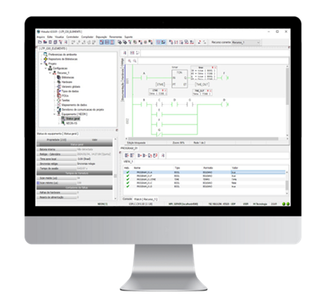

Qual controlador indicar, pelo tamanho da aplicação e pelo que o cliente precisa conectar.
Nas Etapas 2 e 3 você aprendeu a sair da conversa com a lista de sinais, a alimentação e o caminho de comunicação. Agora transforma essas respostas em produto: qual dos três CLPs da HI indicar, quando usar o RION5 como I/O remoto de um NEON5, como falar dos módulos de I/O sem ficha técnica e como apresentar o HIstudio, o software de programação gratuito.
Tempo estimado: 2h30 (leitura, quiz e preparo dos exercícios do encontro).
Hoje a HI trabalha com três controladores. A principal diferença entre eles é a quantidade de módulos de I/O que cada um aceita. Depois vêm três detalhes que decidem a venda: alimentação, SD Card e conectividade.
| RION5 | NEON5 | P7C 302 | |
|---|---|---|---|
| Módulos de I/O | 1 | 1 ou 2 | CPU + 3 no bastidor principal, + até 5 expansões de 4 (até 23) |
| Pontos de I/O | até 16 | até 32 (até 240 com RION5 remotos) | até 368 |
| Alimentação | só DC | AC ou DC | AC ou DC |
| SD Card (log e receitas) | não | sim | sim |
| Conectividade | múltiplas opções: serial RS232 ou RS485, Ethernet/Wi-Fi, rádio 900 MHz, 4G | múltiplas combinações, incluindo Wi-Fi, rádio 900 MHz e 4G | Ethernet, RS485 e RS232 |
| Processador | mais simples | o mesmo do P7C | o mesmo do NEON5 |
| Lançamento | 2023 | 2024 | linha P7C desde 2007 |
Pense em veículos de carga. O RION5 é a moto de entrega: leve, ágil, leva pouco. O NEON5 é a van: o mesmo motor do caminhão, mas leva uma carga média, e pode puxar "carretinhas" (os RION5 remotos). O P7C 302 é o caminhão com reboques: leva muito, e você acrescenta reboques (bastidores de expansão) conforme a carga cresce.
Comece sempre pela lista de sinais da Etapa 2: o número de pontos já elimina opções. Depois confira a alimentação (o RION5 é só DC), se o cliente precisa guardar histórico ou receitas (SD Card) e por onde o CLP vai se comunicar (Etapa 3).
Fontes: Treinamento de Produto, p. 5 a 9; apresentação de CLPs, slides 4 a 7; Catálogo Geral, p. 5 a 9.
Para automatizar aplicações simples, com poucos sinais. O Treinamento de Produto o apresenta como o CLP mais econômico da HI. Valores, só pelo orçamento.
Funciona como um "módulo de I/O extra" para um mestre como o NEON5, instalado perto dos sensores. Detalhes no item 5.
Se o cliente precisa de alimentação AC, de SD Card (histórico, receitas) ou de mais de 16 pontos no mesmo CLP, o RION5 sozinho não atende. Não force a indicação só porque ele é o mais econômico.
Fontes: Treinamento de Produto, p. 6 e 9; apresentação de CLPs, slide 7; Catálogo Geral, p. 6 e 7.
"Receita" na automação é como uma receita de bolo guardada no caderno: a lista de valores (quantidades, temperaturas, tempos) de cada produto. Uma fábrica de café, por exemplo, guarda a receita de cada blend e carrega a certa no CLP quando muda a produção. O SD Card é o caderno.
O NEON5 é muito usado como mestre de rede e de telemetria: coleta dados de vários equipamentos pela RS485 ou pela Ethernet e envia por rádio, Wi-Fi ou 4G integrado para a nuvem. Quando o cliente acha que "é pequeno demais", lembre: o processador é o mesmo do P7C; o que muda é quantos módulos cabem nele.
Fontes: Treinamento de Produto, p. 8; apresentação de CLPs, slide 6; Catálogo Geral, p. 6 e 8.
O P7C atende tanto processos contínuos (controle de processo) quanto manufatura (sequenciamento de máquinas). O P7C 302 é a versão expansível: o cliente começa com o bastidor principal (CPU + 3 módulos de I/O) e acrescenta até 5 bastidores de expansão, com mais 4 módulos cada.
O P7C não traz rádio, Wi-Fi nem 4G entre as suas portas. Se o projeto precisa disso, ou se indica um NEON5/RION5 com a opção certa, ou se completa o P7C com um gateway ou modem (Etapa 5). Confirme a arquitetura com o suporte.
Fontes: Treinamento de Produto, p. 7; apresentação de CLPs, slide 5; Catálogo Geral, p. 5, 9 e 10.
Imagine sensores espalhados longe do painel principal. Em vez de puxar dezenas de cabos longos até o CLP, o cliente instala um RION5 perto dos sensores e liga só um caminho de comunicação até o NEON5 mestre: RS485, Ethernet, Wi-Fi ou, a longas distâncias, rádio 900 MHz.
Usado como I/O remoto, o RION5 permite que o mestre acesse as entradas e saídas dele pela comunicação, sem precisar programar o RION5. O programa fica no NEON5.
É como uma extensão de tomadas com um único fio até a parede: em vez de levar dez fios do quarto até a sala, você leva um, e a extensão distribui lá na ponta.
O argumento é menos cabo, menos infraestrutura e um único programa para cuidar. Pergunte: "os sinais estão todos no mesmo lugar ou espalhados? A que distância do painel?" Sinais espalhados são o gancho para o I/O remoto.
Fontes: Treinamento de Produto, p. 9; apresentação de CLPs, slide 7; Catálogo Geral, p. 7 e 8.
Os módulos são onde os fios dos sensores e atuadores entram no CLP. Cada modelo de módulo traz uma combinação de pontos. Você não precisa decorar códigos: precisa saber que tipos existem e levar ao suporte a lista de sinais certa.
| O módulo pode ter… | Para quê (Etapa 2) |
|---|---|
| Entradas e saídas digitais | Liga/desliga: botões, sensores de presença, relés, sinaleiros. |
| Entradas e saídas analógicas | Medições e comandos de 0 a 100% (4 a 20 mA, 0 a 10 V). |
| Entradas para sensores de temperatura (como o PT100) | Sensores de temperatura que precisam de entrada própria. |
| Entrada para célula de carga | Pesagem. |
| Entradas para pulsos rápidos | Medidores de vazão a pulso e sensores de posição e giro. |
Há duas famílias de módulos: a do RION5 e NEON5 (sete variações) e a do P7C. Elas não se misturam.
Uma combinação de sinais nem sempre cabe num único módulo. Por isso, quem fecha a escolha dos módulos é o suporte, a partir da sua lista de sinais. Não prometa "cabe num RION5" sem essa confirmação.
Leve ao suporte: quantas entradas e saídas digitais, quantas entradas e saídas analógicas (e o tipo: 4 a 20 mA ou 0 a 10 V), sinais especiais (PT100, célula de carga, pulso e a frequência) e se o cliente quer pontos de reserva.
Fontes: Catálogo Geral, p. 7, 8 e 10; Treinamento de Produto, p. 4.

O HIstudio é o ambiente desenvolvido pela HI para configurar, programar, testar (depurar) e documentar os programas dos CLPs. Pontos que importam na venda:
Ladder é a linguagem "desenhada", parecida com um diagrama elétrico, que técnicos de manutenção leem com facilidade. Texto Estruturado é escrito, parecido com programação de computador. Seguir a IEC 61131-3 é como seguir a gramática oficial: quem já programa CLP de outras marcas reconhece o jeito de trabalhar.
"Quanto custa o software de programação?" Nada: o HIstudio é gratuito. E, se a equipe do cliente precisar aprender, há cursos online na HI University (introdução ao HIstudio e Ladder no HIstudio) e o kit de treinamento RTK510 para praticar na bancada.
Fontes: Catálogo Geral, p. 5, 6, 14, 32 e 40.
| O cliente diz… | Indicação provável | Por quê |
|---|---|---|
| "Uma bomba, uma boia e um alarme numa estação pequena, 24 V DC no painel." | RION5 | Poucos pontos, DC, sem histórico. |
| "Preciso guardar as receitas de cada produto e ter tela de 7 polegadas." | NEON5 (ou P7C, se forem muitos pontos) | Receitas pedem SD Card. A tela é outro item (Etapa 6). |
| "São 12 sinais, mas o CLP tem que ser alimentado direto pela rede elétrica." | NEON5 | Poucos pontos, mas AC: o RION5 não tem opção AC. |
| "Uma máquina grande, quase 300 sinais no mesmo painel." | P7C 302 | Até 368 pontos, com bastidores de expansão. |
| "Os sensores ficam espalhados em vários prédios da planta." | NEON5 + RION5 remotos | Menos cabo; um programa só, no NEON5. |
| "Quero mandar os dados para a nuvem pelo 4G, sem outro equipamento." | NEON5 ou RION5 com modem 4G | O 4G vem integrado nessas versões; o P7C precisaria de um modem à parte. |
As quatro perguntas dão a família do CLP. Modelo exato, módulos e versão de comunicação são confirmados com o suporte antes do orçamento.
Fontes: Treinamento de Produto, p. 6 a 9; apresentação de CLPs, slides 4 a 7; Catálogo Geral, p. 6 a 9; exercícios 3, 12 e 16 do Treinamento de Produto (situações).
| O cliente pergunta | Como responder |
|---|---|
| "Qual a diferença entre os três CLPs?" | Principalmente quantos módulos de I/O cada um aceita. Depois: o RION5 é só DC e não tem SD Card; NEON5 e P7C têm AC ou DC e SD Card. |
| "O NEON5 não é fraco demais para o meu projeto?" | Ele usa o mesmo processador do P7C. O limite dele é de módulos locais (até 32 pontos), e dá para ampliar com RION5 remotos. |
| "Minha planta vai crescer." | O P7C 302 cresce com bastidores de expansão; o NEON5 cresce com RION5 remotos. Anote a previsão de crescimento para o suporte dimensionar. |
| "Quanto custa o software de programação?" | O HIstudio é gratuito, para todos os CLPs HI. |
| "Quanto custa o CLP?" | Depende do modelo, dos módulos e da comunicação. Com a lista de sinais em mãos, siga o processo de orçamento do setor de vendas. |
| "Cabe tudo num RION5?" | Se forem até 16 pontos e a combinação couber num módulo, pode ser. Quem confirma a combinação de módulo é o suporte. |
Confira o que ficou. A correção é na hora, com a explicação de cada resposta. Acerte pelo menos 80% antes de marcar a etapa como concluída.
Traga preparado (para cada caso, diga a família de CLP que indicaria, por quê, e o que levaria ao suporte para fechar módulos e versão):
Casos adaptados dos exercícios 2, 3, 7, 10, 12, 13 e 16 do Treinamento de Produto.